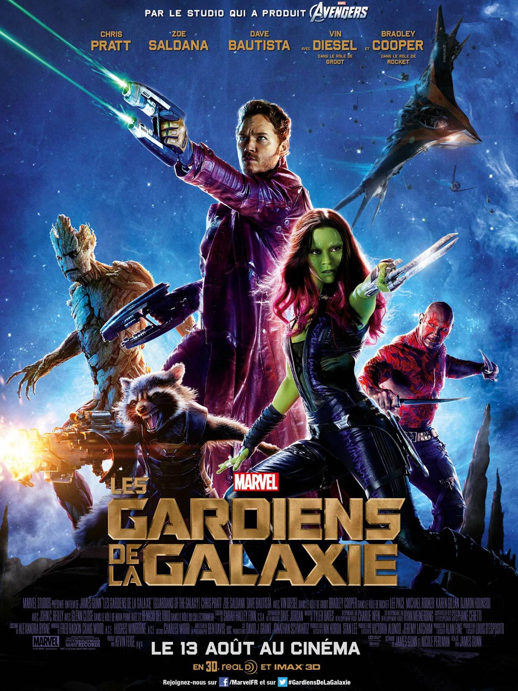

Genres: Action | Adventure | Sci-Fi | Thriller
Production Co: Twentieth Century Fox,Regency Enterprises,New Regency Pictures
Certificate: 12+
Director: Doug Liman
Writers: David S. Goyer, Jim Uhls
Stars: Hayden Christensen, Samuel L.Jackson, Jamie Bell
Release date: 14 February 2008 (USA)
Budget: $85,000,000 (estimated)
Storyline: David Rice is a high school student in Ann Arbor, abandoned by his mother at five, living with his callous, alcoholic father, enamored with Millie, a fellow student, and picked on by at least one classmate. On a winter's day, while about to drown, he discovers he can transport himself instantaneously to anyplace on earth. He runs away from home, goes to New York City, robs a bank vault, and comes to the attention of a shadowy group of government hunters. Eight years later, the hunters, led by the murderous Roland, get a fix on David. He heads home, searches out Millie, invites her to travel with him, and only later realizes that Roland and his crew are seriously deadly. Is everyone close to David in danger?
Original language: English | Italian | Japanese | Mandarin
Duration: 1h 22min
Country: USA | Canada
Genres: Action | Drama | Sci-Fi | Thriller
Production Co: Paramount Pictures,DreamWorks,Reliance Entertainment
Certificate: 16+
Director: Rupert Sanders
Writers: Shirow Masamune, Jamie Moss
Stars: Scarlett Johansson, Pilou Asbaek, Takeshi Kitano
Release date: 30 March 2017 (Russia)
Budget: $110,000,000
Storyline: In the near future, Major Mira Killian (Scarlett Johansson) is the first of her kind: A human saved from a terrible terrorist attack, who is cyber-enhanced to be a perfect soldier devoted to stopping the world's most dangerous criminals. When terrorism reaches a new level that includes the ability to hack into people's minds and control them, Major Killian is uniquely qualified to stop it. As she prepares to face a new enemy, Major Killian discovers that she has been lied to: her life was not saved, it was stolen. She will stop at nothing to recover her past, find out who did this to her and stop them before they do it to others.
Original language: English | Japanese
Duration: 1h 47min
Country: USA | India | Hong Kong | China
Genres: Drama | Fantasy | Romance | Sci-Fi
Production Co: Upside Down Films,Les Films Upside Down,Onyx Films
Certificate: 12+
Director: Juan Solanas
Writers: Juan Solanas, Juan Solanas
Stars: Jim Sturgess, Kirsten Dunst, Timothy Spall
Release date: 23 August 2012 (Russia)
Budget: $60,000,000
Storyline: Adam is a seemingly ordinary guy in a very extraordinary universe. He lives humbly trying to make ends meet, but his romantic spirit holds on to the memory of a girl he loved once upon a time from another world, an inverted affluent world with its own gravity, directly above but beyond reach... a girl named Eden. Their childhood flirtation becomes an impossible love. But when he catches a glimpse of grownup Eden on television, nothing will get in the way of getting her back... Not even the law or science!
Original language: English
Duration: 1h 49min
Country: Canada | France

Genres: Action | Thriller
Production Co: Marvel Studios,Moving Pictures Company,Marvel Enterprises
Certificate: 12+
Director: James Gunn
Writers: James Gunn, Nicole Perlman
Stars: Chris Pratt, Vin Diesel, Bradley Cooper
Release date: 31 July 2014 (Russia)
Budget: $170,000,000
Storyline: After stealing a mysterious orb in the far reaches of outer space, Peter Quill from Earth is now the main target of a manhunt led by the villain known as Ronan the Accuser. To help fight Ronan and his team and save the galaxy from his power, Quill creates a team of space heroes known as the "Guardians of the Galaxy" to save the galaxy.
Original language: English
Duration: 2h 1min
Country: USA